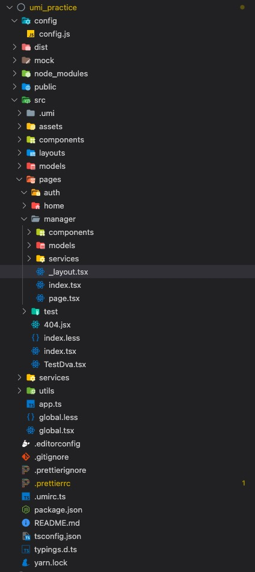

<!DOCTYPE HTML>
<html lang="" >
    <head>
        <meta charset="UTF-8">
        <meta content="text/html; charset=utf-8" http-equiv="Content-Type">
        <title>lessons_05. mobx · React Training</title>
        <meta http-equiv="X-UA-Compatible" content="IE=edge" />
        <meta name="description" content="">
        <meta name="generator" content="GitBook 3.2.3">
        <meta name="author" content="marion.lau@foxmail.com">
        
        
    
    <link rel="stylesheet" href="../gitbook/style.css">

    
            
                
                <link rel="stylesheet" href="../gitbook/gitbook-plugin-expandable-chapters/expandable-chapters.css">
                
            
                
                <link rel="stylesheet" href="../gitbook/gitbook-plugin-prism/prism-tomorrow.css">
                
            
                
                <link rel="stylesheet" href="../gitbook/gitbook-plugin-page-copyright/footer.css">
                
            
                
                <link rel="stylesheet" href="../gitbook/gitbook-plugin-search/search.css">
                
            
                
                <link rel="stylesheet" href="../gitbook/gitbook-plugin-fontsettings/website.css">
                
            
        

    

    
        
        <link rel="stylesheet" href="../assets/style.css">
        
    

        
    
    
    <meta name="HandheldFriendly" content="true"/>
    <meta name="viewport" content="width=device-width, initial-scale=1, user-scalable=no">
    <meta name="apple-mobile-web-app-capable" content="yes">
    <meta name="apple-mobile-web-app-status-bar-style" content="black">
    <link rel="apple-touch-icon-precomposed" sizes="152x152" href="../gitbook/images/apple-touch-icon-precomposed-152.png">
    <link rel="shortcut icon" href="../gitbook/images/favicon.ico" type="image/x-icon">

    
    
    <link rel="prev" href="lessons_03.html" />
    

    </head>
    <body>
        
<div class="book">
    <div class="book-summary">
        
            
<div id="book-search-input" role="search">
    <input type="text" placeholder="Type to search" />
</div>

            
                <nav role="navigation">
                


<ul class="summary">
    
    

    

    
        
        
    
        <li class="chapter " data-level="1.1" data-path="../">
            
                <a href="../">
            
                    
                    前言
            
                </a>
            

            
        </li>
    
        <li class="chapter " data-level="1.2" >
            
                <span>
            
                    
                    第一部分 项目，从零开始
            
                </span>
            

            
            <ul class="articles">
                
    
        <li class="chapter " data-level="1.2.1" data-path="../unit_01/project_procedures.html">
            
                <a href="../unit_01/project_procedures.html">
            
                    
                    lessons_01. 企业项目开发流程
            
                </a>
            

            
        </li>
    
        <li class="chapter " data-level="1.2.2" data-path="../unit_01/operating_environment.html">
            
                <a href="../unit_01/operating_environment.html">
            
                    
                    lessons_02. 开发环境配置
            
                </a>
            

            
        </li>
    
        <li class="chapter " data-level="1.2.3" data-path="../unit_01/webpack.html">
            
                <a href="../unit_01/webpack.html">
            
                    
                    lessons_03. 代码构建工具 Webpack
            
                </a>
            

            
        </li>
    
        <li class="chapter " data-level="1.2.4" data-path="../unit_01/customize-cra.html">
            
                <a href="../unit_01/customize-cra.html">
            
                    
                    lessons_04. 使用 Customize Cra 管理 React 项目
            
                </a>
            

            
        </li>
    
        <li class="chapter " data-level="1.2.5" data-path="../unit_01/git.html">
            
                <a href="../unit_01/git.html">
            
                    
                    lessons_05. 版本管理工具 Git
            
                </a>
            

            
        </li>
    
        <li class="chapter " data-level="1.2.6" data-path="../unit_01/axios_package.html">
            
                <a href="../unit_01/axios_package.html">
            
                    
                    lessons_06. Axios 封装
            
                </a>
            

            
        </li>
    
        <li class="chapter " data-level="1.2.7" data-path="../unit_01/storage_package.html">
            
                <a href="../unit_01/storage_package.html">
            
                    
                    lessons_07. Storage 管理
            
                </a>
            

            
        </li>
    
        <li class="chapter " data-level="1.2.8" data-path="../unit_01/utils_package.html">
            
                <a href="../unit_01/utils_package.html">
            
                    
                    lessons_08. 防抖与节流
            
                </a>
            

            
        </li>
    
        <li class="chapter " data-level="1.2.9" data-path="../unit_01/eslint.html">
            
                <a href="../unit_01/eslint.html">
            
                    
                    lessons_09. 代码规范与 ESLint
            
                </a>
            

            
        </li>
    

            </ul>
            
        </li>
    
        <li class="chapter " data-level="1.3" >
            
                <span>
            
                    
                    第二部分 React 基础回顾
            
                </span>
            

            
            <ul class="articles">
                
    
        <li class="chapter " data-level="1.3.1" data-path="../unit_02/component_state.html">
            
                <a href="../unit_02/component_state.html">
            
                    
                    lessons_01. 组件与 state
            
                </a>
            

            
        </li>
    
        <li class="chapter " data-level="1.3.2" data-path="../unit_02/communication.html">
            
                <a href="../unit_02/communication.html">
            
                    
                    lessons_02. 组件嵌套与通信
            
                </a>
            

            
        </li>
    
        <li class="chapter " data-level="1.3.3" data-path="../unit_02/life_cycle.html">
            
                <a href="../unit_02/life_cycle.html">
            
                    
                    lessons_03. 生命周期与组件优化
            
                </a>
            

            
        </li>
    
        <li class="chapter " data-level="1.3.4" data-path="../unit_02/route_manage.html">
            
                <a href="../unit_02/route_manage.html">
            
                    
                    lessons_04. 路由管理与路由守卫
            
                </a>
            

            
        </li>
    
        <li class="chapter " data-level="1.3.5" data-path="../unit_02/route_auth.html">
            
                <a href="../unit_02/route_auth.html">
            
                    
                    lessons_06. 嵌套路由与权限管理
            
                </a>
            

            
        </li>
    
        <li class="chapter " data-level="1.3.6" data-path="../unit_02/hoc.html">
            
                <a href="../unit_02/hoc.html">
            
                    
                    lessons_07. 高阶组件
            
                </a>
            

            
        </li>
    
        <li class="chapter " data-level="1.3.7" data-path="../unit_02/portals.html">
            
                <a href="../unit_02/portals.html">
            
                    
                    lessons_08. 传送门及其它
            
                </a>
            

            
        </li>
    
        <li class="chapter " data-level="1.3.8" data-path="../unit_02/dom_jsx.html">
            
                <a href="../unit_02/dom_jsx.html">
            
                    
                    lessons_09. JSX 与虚拟 DOM
            
                </a>
            

            
        </li>
    
        <li class="chapter " data-level="1.3.9" data-path="../unit_02/diff_fiber.html">
            
                <a href="../unit_02/diff_fiber.html">
            
                    
                    lessons_09. DIFF 与 FIBER
            
                </a>
            

            
        </li>
    

            </ul>
            
        </li>
    
        <li class="chapter " data-level="1.4" >
            
                <span>
            
                    
                    第三部分 React 状态管理
            
                </span>
            

            
            <ul class="articles">
                
    
        <li class="chapter " data-level="1.4.1" data-path="../unit_03/redux.html">
            
                <a href="../unit_03/redux.html">
            
                    
                    lessons_01. 什么是 Redux
            
                </a>
            

            
        </li>
    
        <li class="chapter " data-level="1.4.2" data-path="../unit_03/react-redux.html">
            
                <a href="../unit_03/react-redux.html">
            
                    
                    lessons_02. react-redux
            
                </a>
            

            
        </li>
    
        <li class="chapter " data-level="1.4.3" data-path="../unit_03/set_config.html">
            
                <a href="../unit_03/set_config.html">
            
                    
                    lessons_03. redux 开发工具与 store 配置
            
                </a>
            

            
        </li>
    
        <li class="chapter " data-level="1.4.4" data-path="../unit_03/lessons_04.md">
            
                <span>
            
                    
                    lessons_04. redux 中间件
            
                </a>
            

            
        </li>
    
        <li class="chapter " data-level="1.4.5" data-path="../unit_03/lessons_05.md">
            
                <span>
            
                    
                    lessons_05. redux 规范
            
                </a>
            

            
        </li>
    
        <li class="chapter " data-level="1.4.6" data-path="../unit_03/lessons_06.md">
            
                <span>
            
                    
                    lessons_06. redux persist
            
                </a>
            

            
        </li>
    
        <li class="chapter " data-level="1.4.7" data-path="../unit_03/redux_saga.html">
            
                <a href="../unit_03/redux_saga.html">
            
                    
                    lessons_07. redux-saga
            
                </a>
            

            
        </li>
    
        <li class="chapter " data-level="1.4.8" data-path="../unit_03/dva_umi.html">
            
                <a href="../unit_03/dva_umi.html">
            
                    
                    lessons_08. dva 与 umi
            
                </a>
            

            
        </li>
    

            </ul>
            
        </li>
    
        <li class="chapter " data-level="1.5" >
            
                <span>
            
                    
                    第四部分 React 项目实战-第三方组件库
            
                </span>
            

            
            <ul class="articles">
                
    
        <li class="chapter " data-level="1.5.1" data-path="../unit_04/lessons_01.html">
            
                <a href="../unit_04/lessons_01.html">
            
                    
                    lessons_01. Antd Modal
            
                </a>
            

            
        </li>
    
        <li class="chapter " data-level="1.5.2" data-path="../unit_04/lessons_02.html">
            
                <a href="../unit_04/lessons_02.html">
            
                    
                    lessons_02. Antd Form
            
                </a>
            

            
        </li>
    
        <li class="chapter " data-level="1.5.3" data-path="../unit_04/lessons_03.html">
            
                <a href="../unit_04/lessons_03.html">
            
                    
                    lessons_03. Antd Table + Pagination
            
                </a>
            

            
        </li>
    
        <li class="chapter " data-level="1.5.4" data-path="../unit_04/lessons_04.html">
            
                <a href="../unit_04/lessons_04.html">
            
                    
                    lessons_04. Antd Upload
            
                </a>
            

            
        </li>
    
        <li class="chapter " data-level="1.5.5" data-path="../unit_04/lessons_05.html">
            
                <a href="../unit_04/lessons_05.html">
            
                    
                    lessons_05. Antd 其它
            
                </a>
            

            
        </li>
    

            </ul>
            
        </li>
    
        <li class="chapter " data-level="1.6" >
            
                <span>
            
                    
                    第五部分 环境与版本管理
            
                </span>
            

            
            <ul class="articles">
                
    
        <li class="chapter " data-level="1.6.1" data-path="../unit_05/lessons_01.html">
            
                <a href="../unit_05/lessons_01.html">
            
                    
                    lessons_01. 开发环境配置
            
                </a>
            

            
        </li>
    
        <li class="chapter " data-level="1.6.2" data-path="../unit_05/lessons_02.html">
            
                <a href="../unit_05/lessons_02.html">
            
                    
                    lessons_02. git 配置与版本管理
            
                </a>
            

            
        </li>
    
        <li class="chapter " data-level="1.6.3" data-path="../unit_05/lessons_03.html">
            
                <a href="../unit_05/lessons_03.html">
            
                    
                    lessons_03. webpack 入门
            
                </a>
            

            
        </li>
    
        <li class="chapter " data-level="1.6.4" data-path="../unit_05/lessons_04.html">
            
                <a href="../unit_05/lessons_04.html">
            
                    
                    lessons_04. webpack 配置与项目优化
            
                </a>
            

            
        </li>
    
        <li class="chapter " data-level="1.6.5" data-path="../unit_05/lessons_05.html">
            
                <a href="../unit_05/lessons_05.html">
            
                    
                    lessons_05. 项目流程与发布相关
            
                </a>
            

            
        </li>
    

            </ul>
            
        </li>
    
        <li class="chapter " data-level="1.7" >
            
                <span>
            
                    
                    第六部分 ECMAScript 基础
            
                </span>
            

            
            <ul class="articles">
                
    
        <li class="chapter " data-level="1.7.1" data-path="../unit_06/lessons_01.html">
            
                <a href="../unit_06/lessons_01.html">
            
                    
                    lessons_01. ES6 常用方法
            
                </a>
            

            
        </li>
    
        <li class="chapter " data-level="1.7.2" data-path="../unit_06/lessons_03.html">
            
                <a href="../unit_06/lessons_03.html">
            
                    
                    lessons_02. promise 与 async/await
            
                </a>
            

            
        </li>
    
        <li class="chapter " data-level="1.7.3" data-path="../unit_06/lessons_07.html">
            
                <a href="../unit_06/lessons_07.html">
            
                    
                    lessons_03. 原型与原型链以及继承
            
                </a>
            

            
        </li>
    
        <li class="chapter " data-level="1.7.4" data-path="../unit_06/lessons_09.html">
            
                <a href="../unit_06/lessons_09.html">
            
                    
                    lessons_04. JS 事件循环
            
                </a>
            

            
        </li>
    
        <li class="chapter " data-level="1.7.5" data-path="../unit_06/lessons_04.html">
            
                <a href="../unit_06/lessons_04.html">
            
                    
                    lessons_05. Set/Map
            
                </a>
            

            
        </li>
    
        <li class="chapter " data-level="1.7.6" data-path="../unit_06/lessons_05.html">
            
                <a href="../unit_06/lessons_05.html">
            
                    
                    lessons_06. Reflect/Proxy
            
                </a>
            

            
        </li>
    
        <li class="chapter " data-level="1.7.7" data-path="../unit_06/lessons_02.html">
            
                <a href="../unit_06/lessons_02.html">
            
                    
                    lessons_07. 函数式编程的一些小知识
            
                </a>
            

            
        </li>
    
        <li class="chapter " data-level="1.7.8" data-path="../unit_06/lessons_06.html">
            
                <a href="../unit_06/lessons_06.html">
            
                    
                    lessons_08. ES 笔试题实现
            
                </a>
            

            
        </li>
    

            </ul>
            
        </li>
    
        <li class="chapter " data-level="1.8" >
            
                <span>
            
                    
                    第七部分 React Hooks
            
                </span>
            

            
            <ul class="articles">
                
    
        <li class="chapter " data-level="1.8.1" data-path="../unit_07/lessons_01.html">
            
                <a href="../unit_07/lessons_01.html">
            
                    
                    lessons_01. 常用 hook
            
                </a>
            

            
        </li>
    
        <li class="chapter " data-level="1.8.2" data-path="../unit_07/lessons_02.html">
            
                <a href="../unit_07/lessons_02.html">
            
                    
                    lessons_02. 其它 hook
            
                </a>
            

            
        </li>
    
        <li class="chapter " data-level="1.8.3" data-path="../unit_07/lessons_04.html">
            
                <a href="../unit_07/lessons_04.html">
            
                    
                    lessons_03. 使用 useReduce 取代 redux
            
                </a>
            

            
        </li>
    
        <li class="chapter " data-level="1.8.4" data-path="../unit_07/lessons_03.html">
            
                <a href="../unit_07/lessons_03.html">
            
                    
                    lessons_04. 自定义 hooks
            
                </a>
            

            
        </li>
    

            </ul>
            
        </li>
    
        <li class="chapter " data-level="1.9" >
            
                <span>
            
                    
                    第八部分 React 状态管理
            
                </span>
            

            
            <ul class="articles">
                
    
        <li class="chapter " data-level="1.9.1" data-path="lessons_05.html">
            
                <a href="lessons_05.html">
            
                    
                    lessons_01. redux 知识回顾
            
                </a>
            

            
        </li>
    
        <li class="chapter " data-level="1.9.2" data-path="lessons_01.html">
            
                <a href="lessons_01.html">
            
                    
                    lessons_02. redux saga
            
                </a>
            

            
        </li>
    
        <li class="chapter " data-level="1.9.3" data-path="lessons_02.html">
            
                <a href="lessons_02.html">
            
                    
                    lessons_03. dva 框架
            
                </a>
            

            
        </li>
    
        <li class="chapter " data-level="1.9.4" data-path="lessons_03.html">
            
                <a href="lessons_03.html">
            
                    
                    lessons_04. umi 的使用
            
                </a>
            

            
        </li>
    
        <li class="chapter active" data-level="1.9.5" data-path="lessons_04.html">
            
                <a href="lessons_04.html">
            
                    
                    lessons_05. mobx
            
                </a>
            

            
        </li>
    

            </ul>
            
        </li>
    
        <li class="chapter " data-level="1.10" >
            
                <span>
            
                    
                    第九部分 TypeScript
            
                </span>
            

            
            <ul class="articles">
                
    
        <li class="chapter " data-level="1.10.1" data-path="../unit_09/lessons_01.html">
            
                <a href="../unit_09/lessons_01.html">
            
                    
                    lessons_01. TypeScript 基础过一过
            
                </a>
            

            
        </li>
    
        <li class="chapter " data-level="1.10.2" data-path="../unit_09/lessons_02.html">
            
                <a href="../unit_09/lessons_02.html">
            
                    
                    lessons_02. TypeScript 必会知识点
            
                </a>
            

            
        </li>
    
        <li class="chapter " data-level="1.10.3" data-path="../unit_09/lessons_03.html">
            
                <a href="../unit_09/lessons_03.html">
            
                    
                    lessons_03. TypeScript 与类组件
            
                </a>
            

            
        </li>
    
        <li class="chapter " data-level="1.10.4" data-path="../unit_09/lessons_04.html">
            
                <a href="../unit_09/lessons_04.html">
            
                    
                    lessons_04. TypeScript 与函数组件
            
                </a>
            

            
        </li>
    

            </ul>
            
        </li>
    
        <li class="chapter " data-level="1.11" >
            
                <span>
            
                    
                    第十部分 一些不常见的面试问题
            
                </span>
            

            
            <ul class="articles">
                
    
        <li class="chapter " data-level="1.11.1" data-path="../unit_10/micro_frontend.html">
            
                <a href="../unit_10/micro_frontend.html">
            
                    
                    lessons_01. 什么是微前端
            
                </a>
            

            
        </li>
    
        <li class="chapter " data-level="1.11.2" data-path="../unit_10/single_sign_on.html">
            
                <a href="../unit_10/single_sign_on.html">
            
                    
                    lessons_02. 单点登陆
            
                </a>
            

            
        </li>
    
        <li class="chapter " data-level="1.11.3" data-path="../unit_10/websocket.html">
            
                <a href="../unit_10/websocket.html">
            
                    
                    lessons_03. websocket
            
                </a>
            

            
        </li>
    
        <li class="chapter " data-level="1.11.4" data-path="../unit_10/cross_domain.html">
            
                <a href="../unit_10/cross_domain.html">
            
                    
                    lessons_04. 跨域问题
            
                </a>
            

            
        </li>
    
        <li class="chapter " data-level="1.11.5" data-path="../unit_10/use_mock.html">
            
                <a href="../unit_10/use_mock.html">
            
                    
                    lessons_05. mock 的配置与使用
            
                </a>
            

            
        </li>
    
        <li class="chapter " data-level="1.11.6" data-path="../unit_10/server_side_render.html">
            
                <a href="../unit_10/server_side_render.html">
            
                    
                    lessons_06. 什么是 ssr
            
                </a>
            

            
        </li>
    
        <li class="chapter " data-level="1.11.7" data-path="../unit_10/npm_publish.md">
            
                <span>
            
                    
                    lessons_07. 发布你的 npm 插件
            
                </a>
            

            
        </li>
    

            </ul>
            
        </li>
    
        <li class="chapter " data-level="1.12" >
            
                <span>
            
                    
                    第十一部分 杂七杂八
            
                </span>
            

            
            <ul class="articles">
                
    
        <li class="chapter " data-level="1.12.1" data-path="../unit_10/lessons_02.md">
            
                <span>
            
                    
                    lessons_02. 第三方登陆
            
                </a>
            

            
        </li>
    
        <li class="chapter " data-level="1.12.2" data-path="../unit_10/lessons_03.md">
            
                <span>
            
                    
                    lessons_03. 微信支付
            
                </a>
            

            
        </li>
    
        <li class="chapter " data-level="1.12.3" data-path="../unit_10/lessons_03.md">
            
                <span>
            
                    
                    lessons_04. 微信支付
            
                </a>
            

            
        </li>
    

            </ul>
            
        </li>
    
        <li class="chapter " data-level="1.13" >
            
                <span>
            
                    
                    第十二部分 把 Vue 和小程序拉出来遛遛
            
                </span>
            

            
        </li>
    
        <li class="chapter " data-level="1.14" >
            
                <span>
            
                    
                    第十三部分 完整复习
            
                </span>
            

            
        </li>
    
        <li class="chapter " data-level="1.15" >
            
                <span>
            
                    
                    附件
            
                </span>
            

            
            <ul class="articles">
                
    
        <li class="chapter " data-level="1.15.1" data-path="../enclusore/tech-scheme.html">
            
                <a href="../enclusore/tech-scheme.html">
            
                    
                    项目技术方案
            
                </a>
            

            
        </li>
    
        <li class="chapter " data-level="1.15.2" data-path="../enclusore/cross-domin.md">
            
                <span>
            
                    
                    跨域
            
                </a>
            

            
        </li>
    

            </ul>
            
        </li>
    

    

    <li class="divider"></li>

    <li>
        <a href="https://www.gitbook.com" target="blank" class="gitbook-link">
            Published with GitBook
        </a>
    </li>
</ul>


                </nav>
            
        
    </div>

    <div class="book-body">
        
            <div class="body-inner">
                
                    

<div class="book-header" role="navigation">
    

    <!-- Title -->
    <h1>
        <i class="fa fa-circle-o-notch fa-spin"></i>
        <a href=".." >lessons_05. mobx</a>
    </h1>
</div>


                    <div class="page-wrapper" tabindex="-1" role="main">
                        <div class="page-inner">
                            
<div id="book-search-results">
    <div class="search-noresults">
    
                                <section class="normal markdown-section">
                                
                                <h1 id="lessons04-umi-&#x9879;&#x76EE;&#x5B9E;&#x6218;">lessons_04. umi &#x9879;&#x76EE;&#x5B9E;&#x6218;</h1>
<h2 id="&#x76EE;&#x5F55;&#x7ED3;&#x6784;">&#x76EE;&#x5F55;&#x7ED3;&#x6784;</h2>
<p></p>
<h4 id="&#x7ED3;&#x6784;&#x8BF4;&#x660E;">&#x7ED3;&#x6784;&#x8BF4;&#x660E;</h4>
<pre class="language-"><code class="lang-javascript">&#x251C;&#x2500;&#x2500; config<span class="token operator">/</span>
    &#x251C;&#x2500;&#x2500; config<span class="token punctuation">.</span>js                  <span class="token comment">// umi &#x914D;&#x7F6E;&#xFF0C;&#x540C; .umirc.js&#xFF0C;&#x4E8C;&#x9009;&#x4E00;</span>
&#x251C;&#x2500;&#x2500; dist<span class="token operator">/</span>                          <span class="token comment">// &#x9ED8;&#x8BA4;&#x7684;&#x6253;&#x5305;&#x8F93;&#x51FA;&#x76EE;&#x5F55;</span>
&#x251C;&#x2500;&#x2500; mock<span class="token operator">/</span>                          <span class="token comment">// mock &#x6587;&#x4EF6;&#x6240;&#x5728;&#x76EE;&#x5F55;&#xFF0C;&#x57FA;&#x4E8E; express</span>
&#x251C;&#x2500;&#x2500; <span class="token keyword">public</span><span class="token operator">/</span>                        <span class="token comment">// &#x5168;&#x5C40;&#x76F8;&#x5BF9;&#x8DEF;&#x5F84;&#x6587;&#x4EF6;</span>
&#x2514;&#x2500;&#x2500; src<span class="token operator">/</span>                           <span class="token comment">// &#x5F00;&#x53D1;&#x76EE;&#x5F55;</span>
    &#x251C;&#x2500;&#x2500; <span class="token punctuation">.</span>umi<span class="token operator">/</span>                      <span class="token comment">// dev &#x4E34;&#x65F6;&#x76EE;&#x5F55;&#xFF0C;&#x9700;&#x6DFB;&#x52A0;&#x5230; .gitignore &#x4E0D;&#x5141;&#x8BB8;&#x63D0;&#x4EA4;</span>
    &#x251C;&#x2500;&#x2500; <span class="token punctuation">.</span>umi<span class="token operator">-</span>production<span class="token operator">/</span>           <span class="token comment">// build &#x4E34;&#x65F6;&#x76EE;&#x5F55;&#xFF0C;&#x4F1A;&#x81EA;&#x52A8;&#x5220;&#x9664;</span>
    &#x251C;&#x2500;&#x2500; assets<span class="token operator">/</span>                    <span class="token comment">// &#x9759;&#x6001;&#x6587;&#x4EF6;</span>
    &#x251C;&#x2500;&#x2500; components<span class="token operator">/</span>                <span class="token comment">// &#x5168;&#x5C40;&#x5171;&#x7528;&#x7EC4;&#x4EF6;</span>
    &#x251C;&#x2500;&#x2500; layouts<span class="token operator">/</span>index<span class="token punctuation">.</span>js           <span class="token comment">// &#x5168;&#x5C40;&#x5165;&#x53E3;&#x6587;&#x4EF6;</span>
    &#x251C;&#x2500;&#x2500; models<span class="token operator">/</span>                    <span class="token comment">// &#x5168;&#x5C40;models&#x6587;&#x4EF6;&#xFF0C;&#x5B58;&#x653E;&#x5168;&#x5C40;&#x5171;&#x7528;&#x6570;&#x636E;store</span>
    &#x251C;&#x2500;&#x2500; pages<span class="token operator">/</span>                     <span class="token comment">// &#x9875;&#x9762;&#x76EE;&#x5F55;&#xFF0C;&#x4E1A;&#x52A1;&#x7EC4;&#x4EF6;</span>
        &#x251C;&#x2500;&#x2500; index<span class="token operator">/</span>                 <span class="token comment">// &#x9996;&#x9875;&#x6A21;&#x5757;</span>
        &#x251C;&#x2500;&#x2500; userManager<span class="token operator">/</span>           <span class="token comment">// &#x5047;&#x88C5;&#x6709;&#x4E2A;&#x7528;&#x6237;&#x7BA1;&#x7406;&#x6A21;&#x5757;</span>
            &#x251C;&#x2500;&#x2500; components<span class="token operator">/</span>        <span class="token comment">// &#x7528;&#x6237;&#x7BA1;&#x7406;-&#x5C40;&#x90E8;&#x516C;&#x5171;&#x7EC4;&#x4EF6;</span>
            &#x251C;&#x2500;&#x2500; models<span class="token operator">/</span>            <span class="token comment">// &#x7528;&#x6237;&#x7BA1;&#x7406;-&#x5C40;&#x90E8;models&#xFF0C;&#x5B58;&#x653E;manager&#x7684;store</span>
            &#x251C;&#x2500;&#x2500; services<span class="token operator">/</span>          <span class="token comment">// &#x7528;&#x6237;&#x7BA1;&#x7406;-&#x5C40;&#x90E8;services&#xFF0C;&#x5B58;&#x653E;manager&#x7684;&#x63A5;&#x53E3;</span>
            &#x251C;&#x2500;&#x2500; index<span class="token punctuation">.</span>js           <span class="token comment">// &#x7528;&#x6237;&#x7BA1;&#x7406; index</span>
            &#x251C;&#x2500;&#x2500; page<span class="token punctuation">.</span>js            <span class="token comment">// &#x7528;&#x6237;&#x7BA1;&#x7406; page</span>
            &#x251C;&#x2500;&#x2500; _layout<span class="token punctuation">.</span>js         <span class="token comment">// &#x5D4C;&#x5957;&#x8DEF;&#x7531;&#xFF0C;&#x7EA6;&#x5B9A;&#x76EE;&#x5F55;&#x4E2D;&#x6709;&#x8FD9;&#x4E2A;&#x6587;&#x4EF6;&#x5C31;&#x4F1A;&#x4EE5;&#x8FD9;&#x4E2A;&#x6587;&#x4EF6;&#x4E3A;&#x5F53;&#x524D;&#x76EE;&#x5F55;&#x7684;layout&#xFF0C;&#x5047;&#x88C5;&#x7528;&#x6237;&#x7BA1;&#x7406;&#x7684;layout&#x4E0E;&#x4F17;&#x4E0D;&#x540C;</span>
        &#x251C;&#x2500;&#x2500; <span class="token number">404.</span>js                 <span class="token comment">// 404 &#x9875;&#x9762;</span>
    &#x251C;&#x2500;&#x2500; services<span class="token operator">/</span>                  <span class="token comment">// &#x5168;&#x5C40;services&#x6587;&#x4EF6;&#xFF0C;&#x5B58;&#x653E;&#x5168;&#x5C40;&#x516C;&#x5171;&#x63A5;&#x53E3;</span>
    &#x251C;&#x2500;&#x2500; utils<span class="token operator">/</span>                     <span class="token comment">// &#x5168;&#x5C40;&#x5DE5;&#x5177;&#x7C7B;</span>
    &#x251C;&#x2500;&#x2500; global<span class="token punctuation">.</span>css                 <span class="token comment">// &#x7EA6;&#x5B9A;&#x7684;&#x5168;&#x5C40;&#x6837;&#x5F0F;&#x6587;&#x4EF6;&#xFF0C;&#x81EA;&#x52A8;&#x5F15;&#x5165;&#x3002; &#x7EA6;&#x5B9A;&#x8868;&#x793A;&#x5FC5;&#x987B;&#x662F;&#x8FD9;&#x4E2A;&#x540D;&#x5B57;</span>
    &#x251C;&#x2500;&#x2500; global<span class="token punctuation">.</span>js                  <span class="token comment">// &#x7EA6;&#x5B9A;&#x7684;&#x5168;&#x5C40;Js&#x6587;&#x4EF6;&#xFF0C;&#x81EA;&#x52A8;&#x5F15;&#x5165;&#xFF0C;&#x53EF;&#x4EE5;&#x5728;&#x8FD9;&#x91CC;&#x52A0;&#x5165; polyfill</span>
    &#x251C;&#x2500;&#x2500; app<span class="token punctuation">.</span>js                     <span class="token comment">// &#x8FD0;&#x884C;&#x65F6;&#x914D;&#x7F6E;&#x6587;&#x4EF6;</span>
&#x251C;&#x2500;&#x2500; <span class="token punctuation">.</span>umirc<span class="token punctuation">.</span>js                      <span class="token comment">// umi &#x914D;&#x7F6E;&#xFF0C;&#x4E0E;&#x4E0A;&#x9762;&#x7684; config/config.js &#x4E00;&#x6837;&#xFF0C;&#x4E8C;&#x9009;&#x4E00;</span>
&#x251C;&#x2500;&#x2500; <span class="token punctuation">.</span>env                           <span class="token comment">// &#x73AF;&#x5883;&#x53D8;&#x91CF;</span>
&#x2514;&#x2500;&#x2500; <span class="token keyword">package</span><span class="token punctuation">.</span>json
</code></pre>
<h4 id="&#x914D;&#x7F6E;&#x6587;&#x4EF6;-configjs">&#x914D;&#x7F6E;&#x6587;&#x4EF6; config.js</h4>
<p>umi &#x5141;&#x8BB8;&#x5728; .umirc.js &#x6216; config/config.js &#xFF08;&#x4E8C;&#x9009;&#x4E00;&#xFF0C;&#x5982;&#x679C;&#x4E24;&#x4E2A;&#x6587;&#x4EF6;&#x90FD;&#x5B58;&#x5728;&#xFF0C;.umirc.js &#x4F18;&#x5148;&#xFF09;&#x4E2D;&#x8FDB;&#x884C;&#x914D;&#x7F6E;&#xFF0C;&#x652F;&#x6301; ES6 &#x8BED;&#x6CD5;&#x3002;&#x6211;&#x4EEC;&#x6682;&#x65F6;&#x5148;&#x4F7F;&#x7528;.umirc.ts&#xFF0C;&#x7B49;&#x540E;&#x9762;&#x770B;&#x8D77;&#x6765;&#x914D;&#x7F6E;&#x592A;&#x591A;&#x65F6;&#x518D;&#x60F3;&#x529E;&#x6CD5;&#x8FC1;&#x5230; config &#x91CC;&#x53BB;</p>
<pre class="language-"><code class="lang-javascript"><span class="token keyword">import</span> <span class="token punctuation">{</span> defineConfig <span class="token punctuation">}</span> <span class="token keyword">from</span> <span class="token string">&apos;umi&apos;</span><span class="token punctuation">;</span>

<span class="token keyword">export</span> <span class="token keyword">default</span> <span class="token function">defineConfig</span><span class="token punctuation">(</span><span class="token punctuation">{</span>
  <span class="token comment">// &#x8FD9;&#x91CC;&#x7684;&#x610F;&#x601D;&#x662F;&#xFF0C;&#x5047;&#x5982;&#x6211;&#x4EEC;&#x9700;&#x8981;&#x914D;&#x7F6E;&#x5230;&#x4E8C;&#x7EA7;&#x8DEF;&#x7531;www&#xFF0C;&#x90A3;&#x6BCF;&#x4E00;&#x6B21;&#x8BBF;&#x95EE;&#x5C31;&#x5FC5;&#x987B;&#x7ED9;&#x8DEF;&#x7531;&#x52A0;&#x4E0A;/www/</span>
  base<span class="token operator">:</span> <span class="token string">&apos;/&apos;</span><span class="token punctuation">,</span> <span class="token comment">// &#x90E8;&#x7F72;&#x5230;&#x975E;&#x6839;&#x76EE;&#x5F55;&#x65F6;&#x53EF;&#x4EE5;&#x4FEE;&#x6539;&#x4E3A;&#x5BF9;&#x5E94;&#x7684;&#x76EE;&#x5F55;&#x540D;</span>
  hash<span class="token operator">:</span> <span class="token boolean">true</span><span class="token punctuation">,</span> <span class="token comment">// &#x5F00;&#x542F;&#x6253;&#x5305;&#x6587;&#x4EF6;&#x7684;hash&#x503C;&#x540E;&#x7F00;&#xFF0C;&#x8FD9;&#x4E2A;&#x4E4B;&#x524D;&#x5728;&#x5B9E;&#x8BAD;&#x4E00;&#x8BB2;webpack&#x65F6;&#x8BB2;&#x8FC7;&#xFF0C;&#x53EF;&#x4EE5;&#x6709;&#x6548;&#x5730;&#x907F;&#x514D;cdn&#x7F13;&#x5B58;&#x548C;&#x6D4F;&#x89C8;&#x5668;&#x7F13;&#x5B58;</span>
  devtool<span class="token operator">:</span> <span class="token string">&apos;source-map&apos;</span><span class="token punctuation">,</span> <span class="token comment">// &#x662F;&#x5426;&#x751F;&#x6210;map&#x6587;&#x4EF6;</span>
  history<span class="token operator">:</span> <span class="token punctuation">{</span>
    <span class="token comment">// &#x6307;&#x5B9A;history&#x7C7B;&#x578B;&#xFF0C;&#x53EF;&#x9009; hash, browser, memory</span>
    type<span class="token operator">:</span> <span class="token string">&apos;browser&apos;</span><span class="token punctuation">,</span>
  <span class="token punctuation">}</span><span class="token punctuation">,</span>
  nodeModulesTransform<span class="token operator">:</span> <span class="token punctuation">{</span>
    <span class="token comment">// &#x4F9D;&#x8D56;&#x6587;&#x4EF6;&#x7684;&#x7F16;&#x8BD1;&#x6A21;&#x5F0F;&#xFF0C;&#x9ED8;&#x8BA4;&#x4E3A;all&#xFF0C;&#x5168;&#x7F16;&#x8BD1;&#xFF0C;&#x4F46;&#x6BD4;&#x8F83;&#x6162;&#x3002;&#x3002;none&#x6BD4;&#x8F83;&#x5FEB;</span>
    type<span class="token operator">:</span> <span class="token string">&apos;none&apos;</span><span class="token punctuation">,</span>
  <span class="token punctuation">}</span><span class="token punctuation">,</span>
  mfsu<span class="token operator">:</span> <span class="token punctuation">{</span><span class="token punctuation">}</span><span class="token punctuation">,</span> <span class="token comment">// &#x9884;&#x7F16;&#x8BD1;&#x6587;&#x4EF6;&#xFF0C;&#x5F53;&#x9879;&#x76EE;&#x6162;&#x6162;&#x53D8;&#x5927;&#x65F6;&#x70ED;&#x66F4;&#x65B0;&#x4F1A;&#x53D8;&#x5F97;&#x5F88;&#x6162;&#xFF0C;&#x6240;&#x4EE5;&#x9700;&#x8981;&#x8FD9;&#x4E2A;&#x52A0;&#x5FEB;&#x7F16;&#x8BD1;&#x901F;&#x5EA6;</span>
  fastRefresh<span class="token operator">:</span> <span class="token punctuation">{</span><span class="token punctuation">}</span><span class="token punctuation">,</span> <span class="token comment">// &#x5FEB;&#x901F;&#x5237;&#x65B0;</span>
  dynamicImport<span class="token operator">:</span> <span class="token boolean">false</span><span class="token punctuation">,</span> <span class="token comment">// &#x6309;&#x9700;&#x52A0;&#x8F7D;&#xFF0C;&#x5B98;&#x7F51;&#x6CA1;&#x6709;&#x592A;&#x8BE6;&#x7EC6;&#x7684;&#x914D;&#x7F6E;&#xFF0C;&#x540E;&#x7EED;&#x518D;&#x8BF4;</span>
  plugins<span class="token operator">:</span> <span class="token punctuation">[</span><span class="token punctuation">]</span><span class="token punctuation">,</span> <span class="token comment">// &#x63D2;&#x4EF6;&#xFF0C;&#x8FD8;&#x6CA1;&#x627E;&#x5230;&#x5177;&#x4F53;&#x600E;&#x4E48;&#x52A0;</span>
  <span class="token comment">// &#x914D;&#x7F6E;&#x5F0F;&#x8DEF;&#x7531;&#x65F6;&#xFF0C;&#x8DEF;&#x7531;&#x6587;&#x4EF6;&#x7531;&#x6B64;&#x5F15;&#x7528;</span>
  <span class="token comment">// routes: routes,</span>
  <span class="token comment">// &#x4EE3;&#x7406;&#x914D;&#x7F6E;</span>
  proxy<span class="token operator">:</span> <span class="token punctuation">{</span>
    <span class="token string">&apos;/api&apos;</span><span class="token operator">:</span> <span class="token punctuation">{</span>
      target<span class="token operator">:</span> <span class="token string">&apos;http://47.93.101.203&apos;</span><span class="token punctuation">,</span>
      changeOrigin<span class="token operator">:</span> <span class="token boolean">true</span><span class="token punctuation">,</span>
      pathRewrite<span class="token operator">:</span> <span class="token punctuation">{</span> <span class="token string">&apos;^/api&apos;</span><span class="token operator">:</span> <span class="token string">&apos;&apos;</span> <span class="token punctuation">}</span><span class="token punctuation">,</span>
    <span class="token punctuation">}</span><span class="token punctuation">,</span>
  <span class="token punctuation">}</span><span class="token punctuation">,</span>
<span class="token punctuation">}</span><span class="token punctuation">)</span><span class="token punctuation">;</span>
</code></pre>
<h4 id="&#x8DEF;&#x7531;&#x914D;&#x7F6E;">&#x8DEF;&#x7531;&#x914D;&#x7F6E;</h4>
<p> &#x8FD9;&#x91CC;&#x6211;&#x4EEC;&#x4E3B;&#x8981;&#x5B66;&#x4E60;&#x7EA6;&#x5B9A;&#x5F0F;&#x8DEF;&#x7531;&#xFF0C;</p>
<footer class="footer"><div class="footer__container--normal" alt=""><div class="footer__description--normal"><p class="paragraph footer__author--normal" style="color: #000 !important;">&#x524D;&#x7AEF;&#x7B14;&#x8BB0;<sup class="super">&#xAE;</sup></p><p class="paragraph footer__quote--normal" style="color: #000 !important;">&#x81F4;&#x6240;&#x6709;&#x60F3;&#x8981;&#x8FDB;&#x5165;&#x524D;&#x7AEF;&#x5F00;&#x53D1;&#x884C;&#x4E1A;&#x7684;&#x65B0;&#x4EBA;&#x4EEC;  -- marion.lau</p><div class="footer__main--normal"><p class="paragraph footer__main__paragraph--normal copyright" style="color: #666 !important;">Copyright &#xA9; marion.lau@foxmail.com all right reserved</p><p class="paragraph footer__main__paragraph--normal footer__modifyTime--normal" style="color: #666 !important;"><span style="color: #666 !important;">modified at</span>
2021-11-19 08:54:30
</p></div></div></div><div class="box__issues">

</div></footer>
                                
                                </section>
                            
    </div>
    <div class="search-results">
        <div class="has-results">
            
            <h1 class="search-results-title"><span class='search-results-count'></span> results matching "<span class='search-query'></span>"</h1>
            <ul class="search-results-list"></ul>
            
        </div>
        <div class="no-results">
            
            <h1 class="search-results-title">No results matching "<span class='search-query'></span>"</h1>
            
        </div>
    </div>
</div>

                        </div>
                    </div>
                
            </div>

            
                
                <a href="lessons_03.html" class="navigation navigation-prev navigation-unique" aria-label="Previous page: lessons_04. umi 的使用">
                    <i class="fa fa-angle-left"></i>
                </a>
                
                
            
        
    </div>

    <script>
        var gitbook = gitbook || [];
        gitbook.push(function() {
            gitbook.page.hasChanged({"page":{"title":"lessons_05. mobx","level":"1.9.5","depth":2,"next":{"title":"第九部分 TypeScript","level":"1.10","depth":1,"ref":"","articles":[{"title":"lessons_01. TypeScript 基础过一过","level":"1.10.1","depth":2,"path":"unit_09/lessons_01.md","ref":"unit_09/lessons_01.md","articles":[]},{"title":"lessons_02. TypeScript 必会知识点","level":"1.10.2","depth":2,"path":"unit_09/lessons_02.md","ref":"unit_09/lessons_02.md","articles":[]},{"title":"lessons_03. TypeScript 与类组件","level":"1.10.3","depth":2,"path":"unit_09/lessons_03.md","ref":"unit_09/lessons_03.md","articles":[]},{"title":"lessons_04. TypeScript 与函数组件","level":"1.10.4","depth":2,"path":"unit_09/lessons_04.md","ref":"unit_09/lessons_04.md","articles":[]}]},"previous":{"title":"lessons_04. umi 的使用","level":"1.9.4","depth":2,"path":"unit_08/lessons_03.md","ref":"unit_08/lessons_03.md","articles":[]},"dir":"ltr"},"config":{"plugins":["expandable-chapters","prism","-highlight","page-copyright","custom-favicon"],"styles":{"website":"./assets/style.css"},"pluginsConfig":{"prism":{"css":["prismjs/themes/prism-tomorrow.css"]},"search":{},"page-copyright":{"wisdom":"致所有想要进入前端开发行业的新人们  -- marion.lau","noPowered":true,"copyright":"Copyright &#169; marion.lau@foxmail.com","styles (normal, symmetrical)":"normal","style":"normal","isShowQRCode":false,"timeColor":"#666","utcOffset":"8","format":"YYYY-MM-dd hh:mm:ss","signature":"前端笔记","baseUri":"http://www.fenotes.com","copyrightColor":"#666","description":"modified at"},"lunr":{"maxIndexSize":1000000,"ignoreSpecialCharacters":false},"fontsettings":{"theme":"white","family":"sans","size":2},"favicon":"./assets/m.png","custom-favicon":{},"sharing":{"facebook":true,"twitter":true,"google":false,"weibo":false,"instapaper":false,"vk":false,"all":["facebook","google","twitter","weibo","instapaper"]},"theme-default":{"styles":{"website":"styles/website.css","pdf":"styles/pdf.css","epub":"styles/epub.css","mobi":"styles/mobi.css","ebook":"styles/ebook.css","print":"styles/print.css"},"showLevel":false},"expandable-chapters":{}},"theme":"default","author":"marion.lau@foxmail.com","pdf":{"pageNumbers":true,"fontSize":12,"fontFamily":"Arial","paperSize":"a4","chapterMark":"pagebreak","pageBreaksBefore":"/","margin":{"right":62,"left":62,"top":56,"bottom":56}},"structure":{"langs":"LANGS.md","readme":"README.md","glossary":"GLOSSARY.md","summary":"SUMMARY.md"},"variables":{},"title":"React Training","gitbook":"*","description":"前端开发人员应知应会，如果你想要入职前端这个行业，建议你将本书中的内容都过一遍，已经了解的知识就当是复习了，不了解的知识，特别是项目这块的，作为一个好的前端，应该都要知道要养成习惯。","theme-default":{"showLevel":true}},"file":{"path":"unit_08/lessons_04.md","mtime":"2021-11-19T00:54:30.000Z","type":"markdown"},"gitbook":{"version":"3.2.3","time":"2021-12-10T01:49:16.740Z"},"basePath":"..","book":{"language":""}});
        });
    </script>
</div>

        
    <script src="../gitbook/gitbook.js"></script>
    <script src="../gitbook/theme.js"></script>
    
        
        <script src="../gitbook/gitbook-plugin-expandable-chapters/expandable-chapters.js"></script>
        
    
        
        <script src="../gitbook/gitbook-plugin-search/search-engine.js"></script>
        
    
        
        <script src="../gitbook/gitbook-plugin-search/search.js"></script>
        
    
        
        <script src="../gitbook/gitbook-plugin-lunr/lunr.min.js"></script>
        
    
        
        <script src="../gitbook/gitbook-plugin-lunr/search-lunr.js"></script>
        
    
        
        <script src="../gitbook/gitbook-plugin-sharing/buttons.js"></script>
        
    
        
        <script src="../gitbook/gitbook-plugin-fontsettings/fontsettings.js"></script>
        
    

    </body>
</html>

